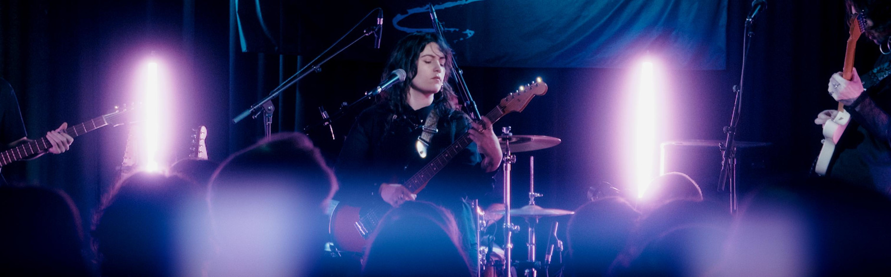

Socials



Quaking Aspens are an ethereal dream-rock outfit carving their name into Brighton's vibrant music scene. Born out of a shared yearning for connection, Quaking Aspens’ lush collision of electric guitars and intricately layered vocals weave a visceral tapestry, reaching through the veil and exploring the magic within darkness.
They've swiftly established themselves in the local music scene and beyond, appearing on the BBC Introducing Live Lounge as well as lighting up stages from festivals like Homegrown and The Alternative Escape, to more intimate settings for Sofar Sounds and the Bella Union Vinyl Shop Sandwich Sessions.
The band are currently recording their debut EP at Farm Road Studios and are preparing for a busy schedule leading them into 2027.
"A lush, shoegaze-influenced offering anchored by lyrical depth and immersive atmospherics" - Earmilk
"Beautiful example of songwriting and soundscaping" - Louder than War
"A sound that is at once spacious and emotionally direct...one of the most exciting new acts in the UK" - Flex Music Blog
"Emotionally weighted but never overwrought" - TAGG Magazine
“Moody in all the right ways, Quaking Aspens deliver a sound that is as interesting as it is beguiling…they’ve been able to create an atmosphere very much their own and their live show is nothing short of hypnotic.” - The Folklore Rooms
"Someone’s still got access to the spell book" - alt77
DORK
Analogue Trash